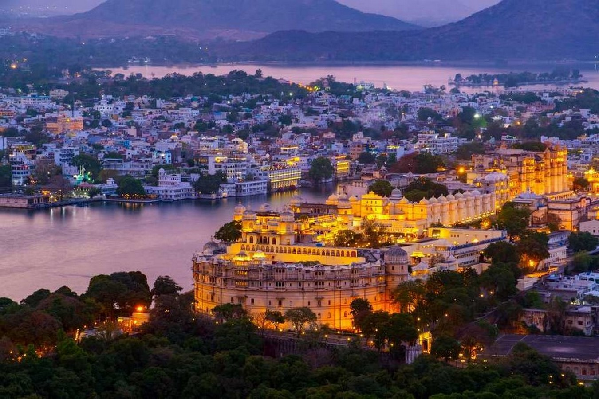
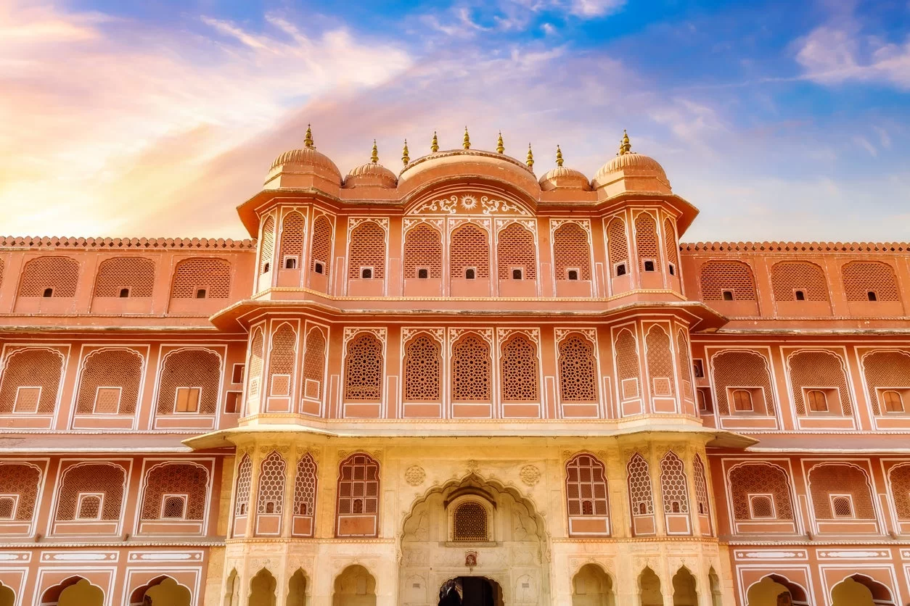
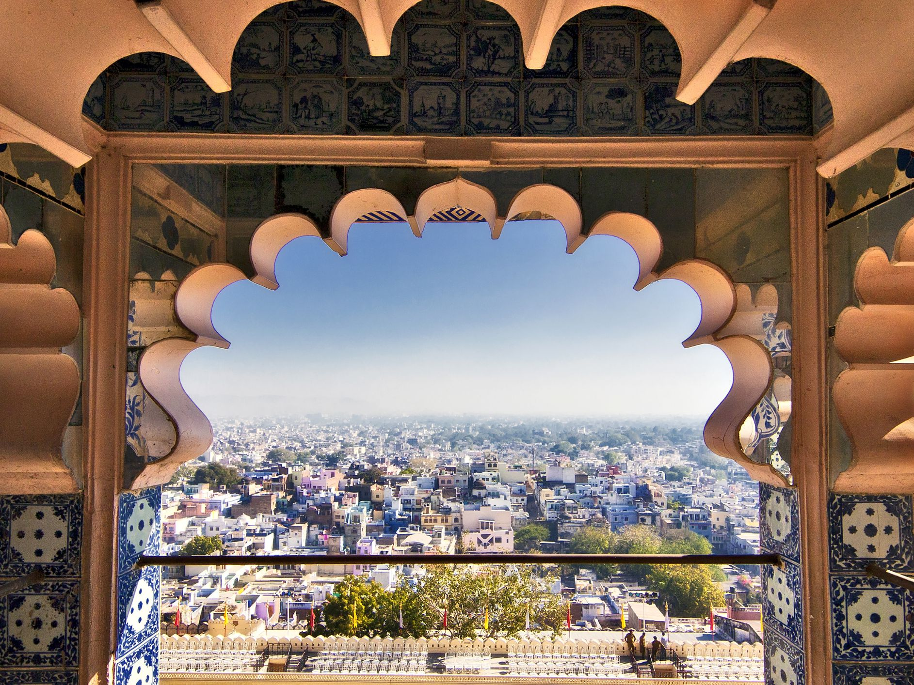
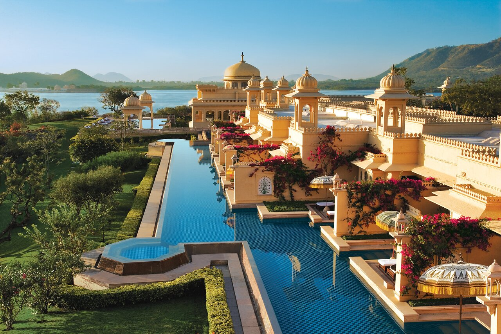
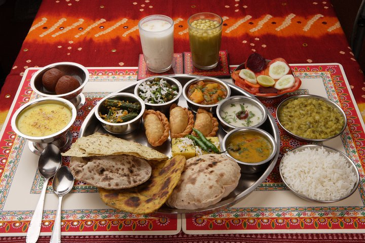

Asia > India > Rajasthan > Udaipur District > Udaipur
ABOUT UDAIPUR
Udaipur, known as the Venice of the East, boasts several
sparkling lakes against a backdrop of the Aravail hills.
Jag Niwas and Jag Mandir, islands in Fateh Sagar Lake, are
the site of Udaipur Solar Observatory and Nehru Garden.
Famous palaces include the magical Lake Palace, now a
luxurious five-star hotel, and the massive City Palace on
Pichola’s east bank, featuring epic courtyards and
stunning paintings.
ESSENTIALS UDAIPUR

~ DO ~
places to see , ways to wander and
signature experience

~ STAY ~
a mixture of the charming , modern and
tried and true

~ EAT ~
can't miss spots to dine , drink
and feast